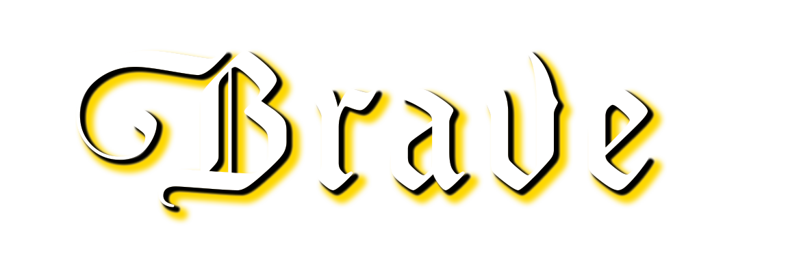
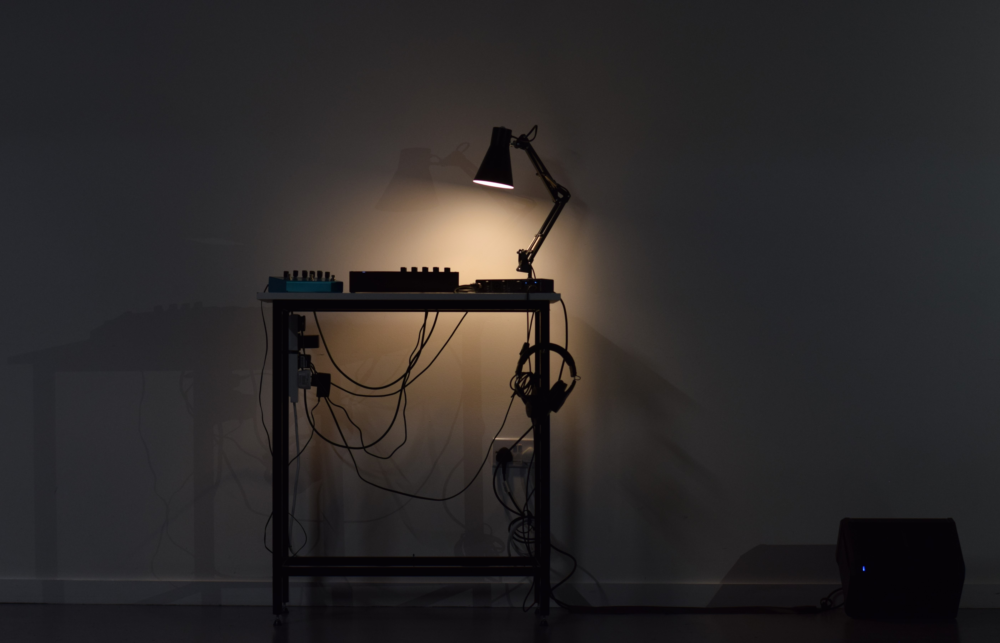
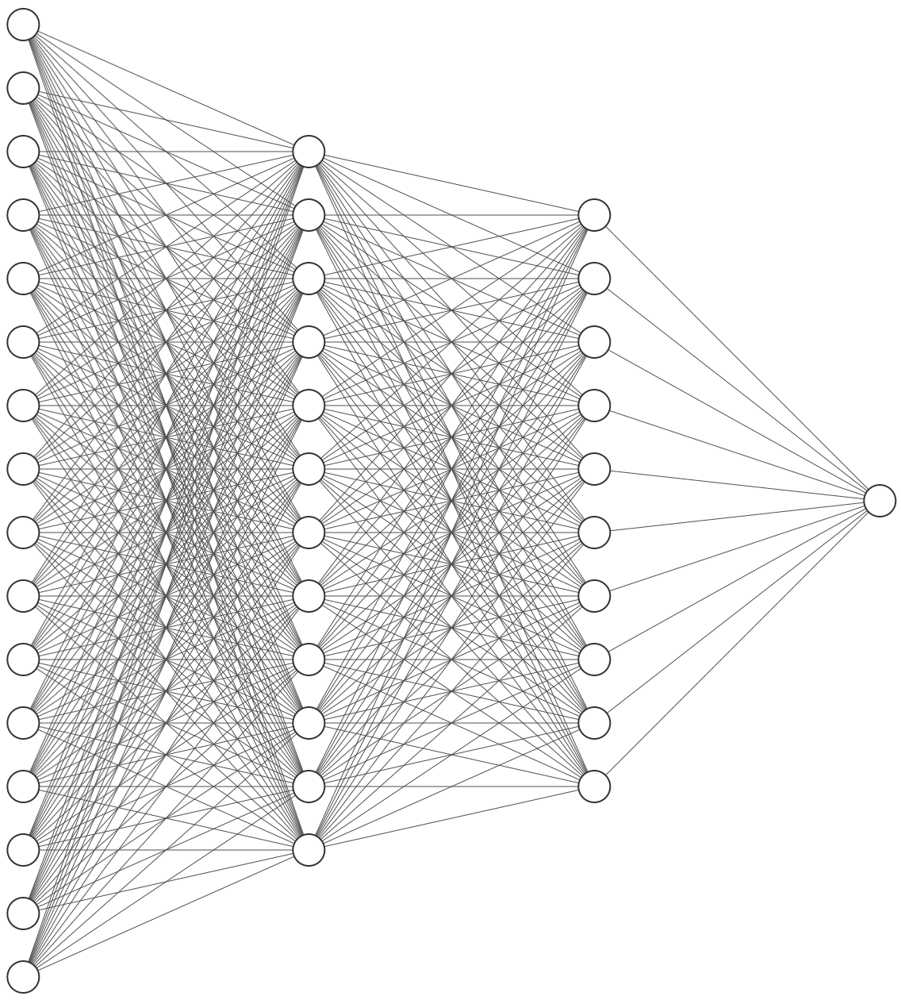
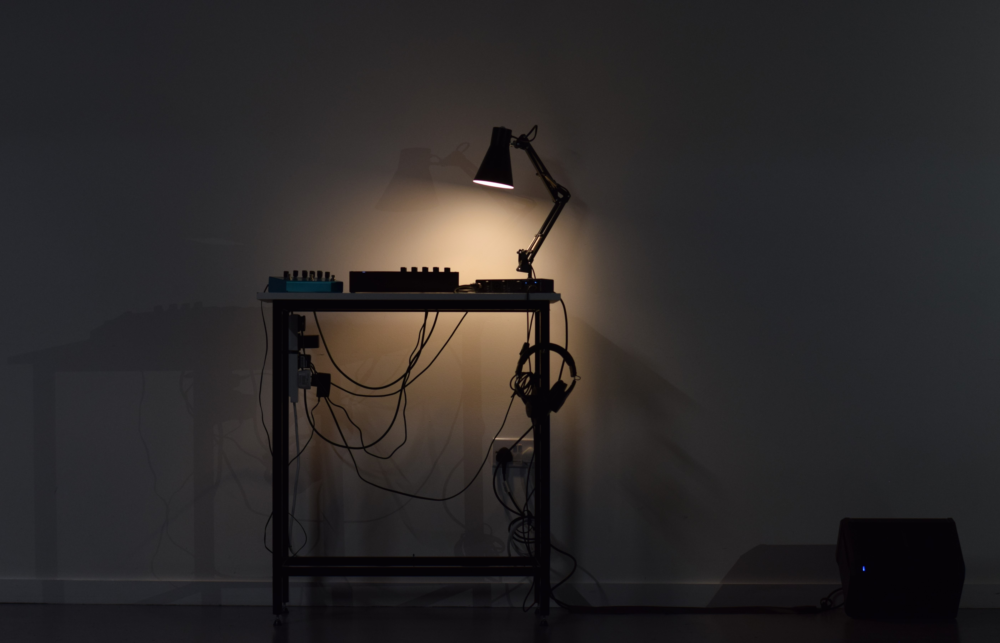
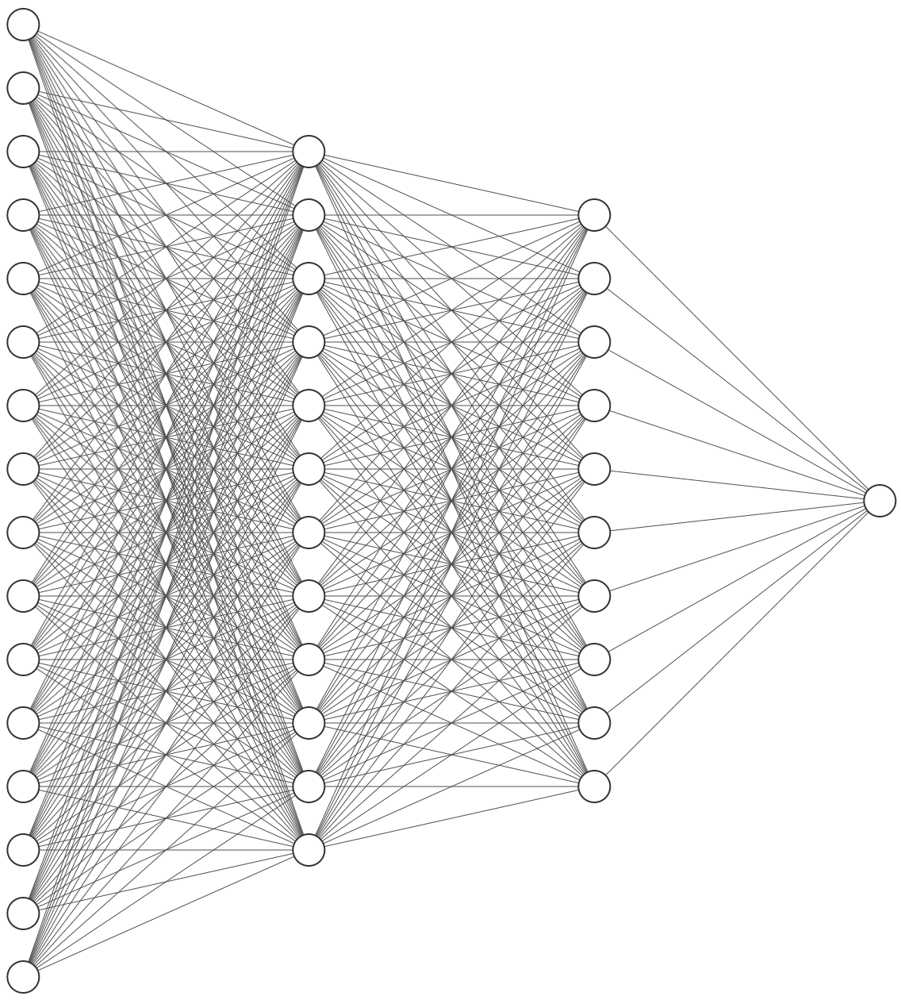

Details & Tech Stack
-------------------------------------------------------
Raspberry Pi 5
3D-printed housing
Python networking script
Displayed at UAL Creative Computing Institute Winter Festival, Eagle Wharf Gallery, 2024
Video Demo <<<<<<<<<<<<<<<<<<<<<<<<<<<<<<<<<<<<<<<<<<<<
GitHub repository <<<<<<<<<<<<<<<<<<<<<<<<<<<<<<<<<<<<<
ICCC'25 Paper(⌐⊙_⊙) <<<<<<<<<<<<<<<<<<<<<<<<<<<<<<<<<

Project Statement
------------------------------------------------------------------------------------------------------
“Brave” proposes an embedded, electro-acoustic network bending instrument. As neural audio synthesis advances, inadvertently becoming an agent of cultural construction, we face increased risk of cultural homogenisation - autophagous AI feedback cycles suppressing atypical expression.
Training corpora are moving from the natural to the synthetic, supporting a cycle of self-consuming generative modelling.
As these tools are further assimilated into society and artistic practice, active divergence [1] from their monolithic output becomes increasingly necessary.
Homogenisation anxiety echoes parallel concerns of mass-consumerism/late-capitalism.
Herbert Marcuse, philosopher of the Frankfurt school, describes the “enchained possibilities of advanced industrial societies”.
In his seminal “One-Dimensional Man”, he describes the “wholesale incorporation” of cultural values through “reproduction and display on a massive scale” [2].
These ideas were inherited by cultural theorist Mark Fisher. In “Capitalist Realism”, he argues the “future harbors only re-iteration and re-permutation” [3], an empty recital, and an eery prediction of the endless reconstruction of training datasets.
Methods such as data rebalancing , augmentation and poisoning aim to address this issue.
This work contributes to the “network-bending” framework - the direct manipulation of neural network parameters in deep generative modelling.
How can the manipulation of ML network architecture become, in itself, an act of creative expression? How can an artist interface with this internal architecture in the context of live performance, manifesting cerebral diversity?
Through the fabrication of a physical network-bending instrument, Brave seeks to democratise participation in network-bending technologies and inspire further investigation within music technologist/sound art communities;
stimulating seditious use of ML technology and a step away from generative homogeneity.
 


